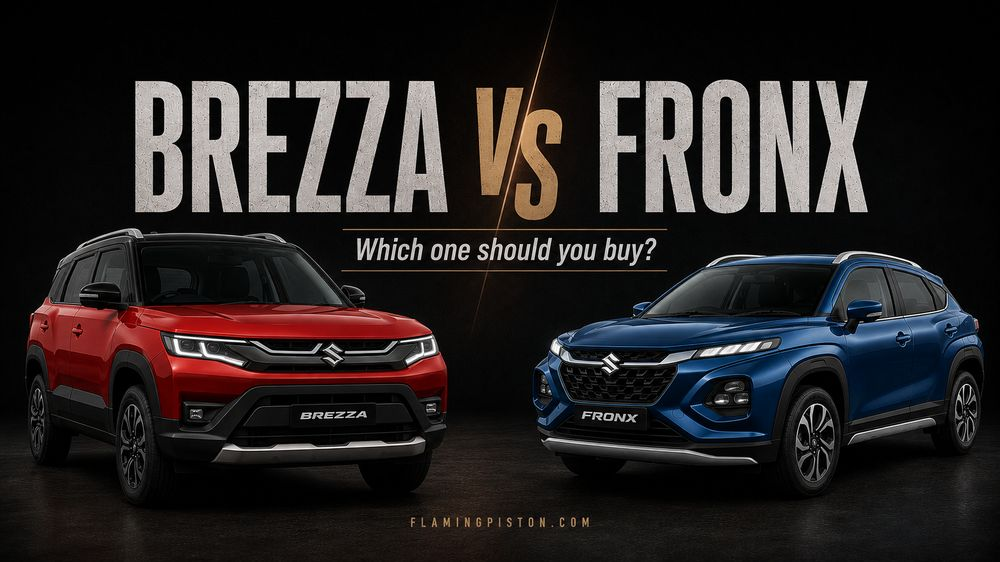
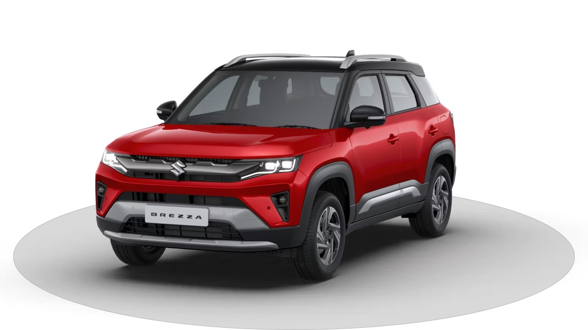
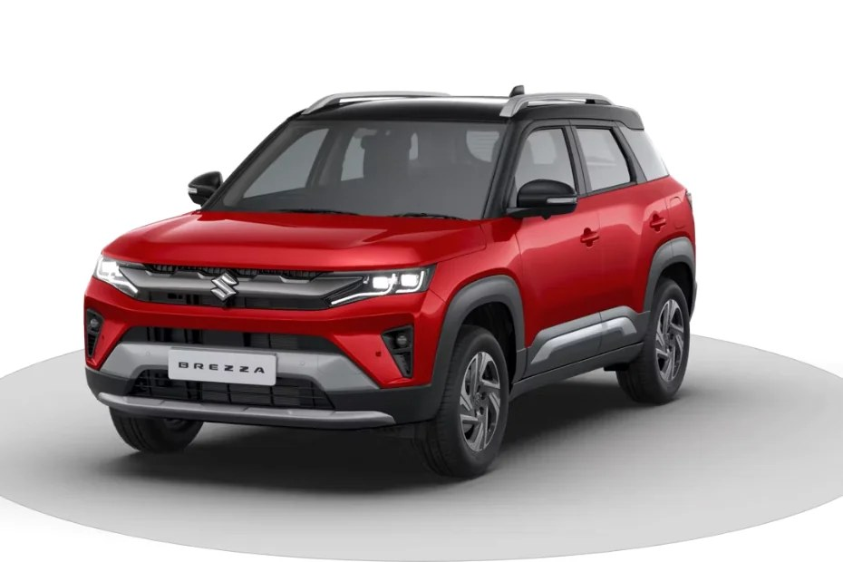
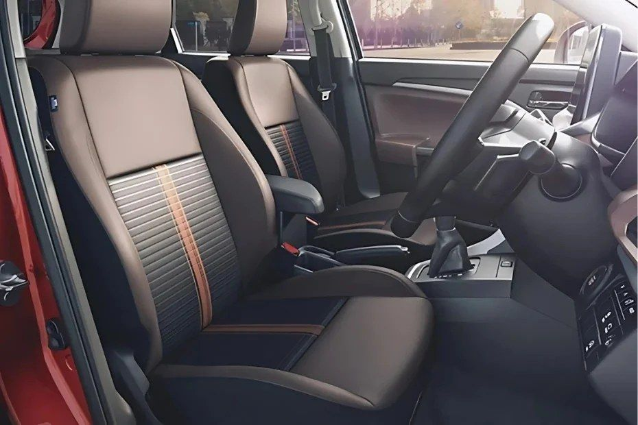
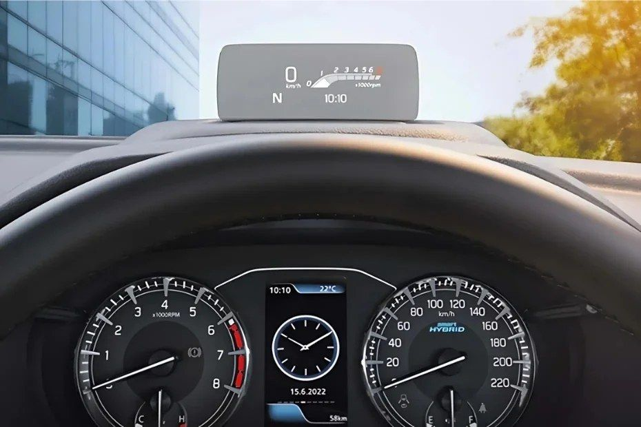
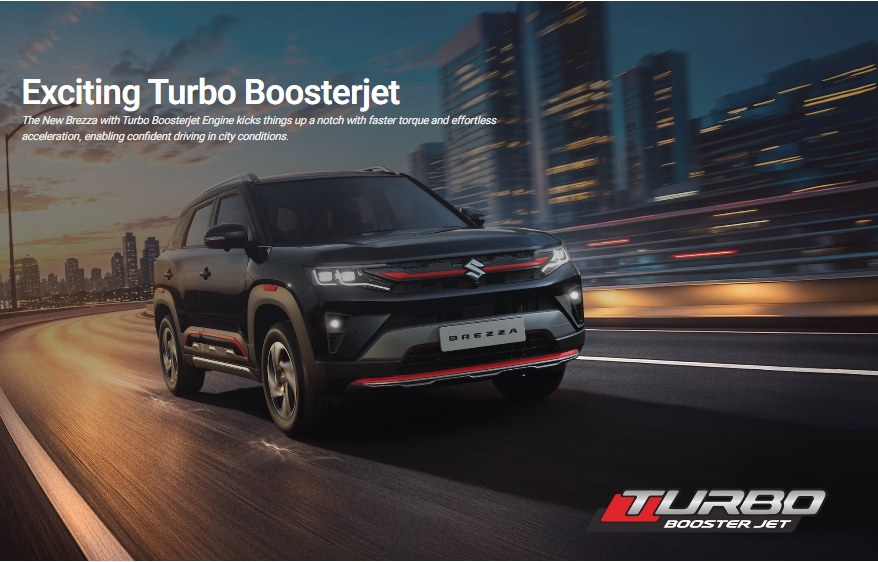

2026 Maruti Brezza vs Fronx: Which One Should You Buy?
By Gagan Mishra

The 2026 Maruti Brezza is no longer just the safe, sensible choice in the compact SUV segment. With a new turbo-petrol engine, updated technology, and a 5-star Bharat NCAP rating, Maruti has given its popular SUV a much-needed refresh. Whether it's actually better than the Tata Nexon, Hyundai Venue, and Mahindra XUV 3XO depends on what you value most: if you want easy everyday driving, a choice of petrol, CNG, and automatic powertrains, strong practicality, and Maruti's service network, it remains genuinely compelling. If outright performance, a longer features list, or more dramatic styling is the priority, there are alternatives worth cross-shopping.
This review is based on Maruti Suzuki's official specifications, published road-test reporting, and owner discussions, rather than our own long-term test. Where a claim comes from published road-test observations rather than our own driving, we say so directly.
The 2026 Brezza doesn't win on any single headline feature. It wins by combining a practical size, genuinely good efficiency, three distinct powertrain choices, a real torque-converter automatic instead of an AMT, and now a 5-star safety rating, into one package with few weak points. The real decision isn't whether to buy a Brezza. It's which engine: the new 1.0 turbo, the familiar 1.5 petrol, or the CNG.
| Variant | Approx. Ex-Showroom Price |
|---|---|
| LXi | From ₹7.40 Lakh |
| VXi | From ₹8.55 Lakh |
| ZXi | From ₹9.85 Lakh |
| ZXi+ | From ₹11.16 Lakh |
| ZXi+ AT | Around ₹13.70 Lakh |
Four trim levels: LXi, VXi, ZXi, and ZXi+. These Brezza variants span petrol, turbo-petrol, and CNG powertrains, with the 1.5-litre petrol also available with a six-speed automatic. Prices can shift with introductory offers and dealer schemes, so treat this table as a starting point rather than a final invoice number.
Best value: VXi. Best all-rounder: ZXi. Best automatic: ZXi AT. Best for fuel economy: CNG. Best for performance: the turbo-petrol manual. The LXi gets you in the door cheapest, but the VXi and ZXi add enough convenience and tech that we'd look there first. Whether the ZXi+ is worth the jump over the ZXi comes down to how much you actually want the sunroof and the 360-degree camera versus keeping that money in your pocket. There are real constraints on which engine and gearbox pair with which trim, we break the whole thing down in our Variants Explained guide. Considering the automatic specifically? See our dedicated Brezza Automatic guide for what it's actually like to drive.

This is a facelift, not a redesign, and it reads that way. The front end gets the real changes: a revised grille, new bumper treatment, skid-plate elements, and a redesigned fog-lamp housing. The turbo-petrol variant is identifiable by red exterior accents and turbo badging. From the side and rear, the changes are far more subtle, and the Brezza's upright proportions and sub-four-metre length carry over unchanged. If you're expecting a dramatic visual transformation, this isn't it. What you get instead is a Brezza that looks mature rather than flashy, which fits the rest of the car's personality.

Maruti didn't redesign the cabin either, choosing instead to concentrate the update on technology and equipment. The headline change is a new 10.1-inch infotainment screen replacing the old 9-inch unit, with wireless Android Auto and Apple CarPlay plus Suzuki Connect. Higher variants add an electric sunroof, wireless charger, 360-degree camera, ventilated front seats, a head-up display, and rear AC vents. The layout underneath all of it stays familiar, which means Maruti improved the equipment without touching the practical cabin design buyers already know and trust.
On dimensions, the Brezza measures 3,995mm long, 1,790mm wide, 1,685mm tall, with a 2,500mm wheelbase and a 328-litre boot, all essentially unchanged from before. It's a five-seater that handles four adults comfortably and five adults about as well as any compact SUV in this segment does, which is to say, fine for a while, not for a long haul. The 328 litres of boot space isn't class-leading, but it's genuinely usable, and the CNG version's underbody tank placement means you don't lose that space just for choosing the cheaper-to-run engine.

The bigger story of this update isn't the touchscreen. It's the Brezza safety story. The 2026 Brezza has received a 5-star Bharat NCAP rating, scoring 30.41/32 for adult occupant protection and 43/49 for child occupant protection. Standard safety kit includes six airbags, ABS, ESP, hill-hold, and ISOFIX child-seat anchors. Crash-test stars aren't the whole safety picture, but a 5-star Bharat NCAP result is a genuine, meaningful upgrade for family buyers cross-shopping this segment.
| Safety Metric | Score |
|---|---|
| Bharat NCAP Overall Rating | 5 Stars |
| Adult Occupant Protection | 30.41 / 32 |
| Child Occupant Protection | 43 / 49 |

This is where the 2026 update actually gets interesting. The new 998cc 1.0-litre turbo-petrol makes around 110 PS and 170 Nm, paired exclusively with a six-speed manual. Published road-test reporting describes it as responsive with minimal turbo lag and a light clutch, more punch than the naturally aspirated engine, particularly in the low and mid range. The catch, and it's a real one: there's no automatic option with the turbo. If you want a self-shifting Brezza, you're buying the 1.5-litre petrol instead.
That 1.5-litre naturally aspirated engine continues on, making around 102 bhp and 137 to 139 Nm depending on the spec sheet you check, available with either a six-speed manual or, more relevantly, a genuine six-speed torque-converter automatic. That's worth underlining: not an AMT pretending to be an automatic, but a proper torque-converter unit built for smoother gear changes in stop-and-go traffic. For buyers covering serious distance, the 1.5-litre CNG makes around 87 bhp and 121.5 Nm, with claimed efficiency up to 26.90 km/kg, and the tank sits under the vehicle rather than eating into the 328-litre boot.
| Powertrain | Claimed Efficiency |
|---|---|
| 1.0 Turbo Petrol | Up to ~20.47 km/l |
| 1.5 Petrol Manual | Around ~20.8–21.1 km/l |
| 1.5 Petrol Automatic | Around ~20.17 km/l |
| CNG | Up to ~26.90 km/kg |
Worth being honest about: claimed mileage and real-world mileage are two different numbers, and owner discussions back that up. One Brezza automatic owner reported around 16 km/l in heavy Ghaziabad and Noida traffic, calculated tank-to-tank over 606 km, well below the claimed figure. That doesn't mean every Brezza returns 16 km/l either. It means you should treat the table above as a ceiling, not a promise, and factor in your own traffic, AC use, and driving style before you bank on a specific number. We've broken this down properly, city vs highway, automatic vs manual, and what actually moves the number, in our 2026 Maruti Brezza Real-World Mileage guide.
This section draws on published road-test reporting rather than our own extended drive, in line with our Review Methodology. We'll update it once we've spent real time behind the wheel. The 1.5-litre petrol is the relaxed option: not built for explosive acceleration, but predictable and easy day to day, and paired with the six-speed automatic it's a strong fit for anyone spending most of their time in city traffic. The 1.0-litre turbo changes the car's character entirely. With more torque than the naturally aspirated engine and, per published road-test observations, minimal lag with good low and mid-range response, it's the more genuinely engaging Brezza to drive. The trade-off is real, though: no automatic gearbox with the turbo, so if effortless city driving matters more to you than outright response, the 1.5 automatic is still the one to buy.
Pros:
Cons:
Following our Review Methodology, we rate every review across eight criteria, then average them into the final Octane Score.
| Criteria | Score |
|---|---|
| Design | 8.0 / 10 |
| Performance | 8.0 / 10 |
| Mileage Potential | 8.5 / 10 |
| Comfort | 8.0 / 10 |
| Features | 8.0 / 10 |
| Safety | 9.0 / 10 |
| Practicality | 8.5 / 10 |
| Value for Money | 8.5 / 10 |
| Octane Score (average) | 8.2 / 10 |
The 2026 Brezza doesn't try to reinvent the compact SUV. Maruti took a formula that was already selling well and fixed its real weaknesses: the 1.0-litre turbo gives enthusiasts something more interesting to drive, the 10.1-inch screen modernises a cabin that was starting to feel dated, and the 5-star Bharat NCAP rating makes it considerably more convincing as a family car. None of that erases the trade-offs. The styling changes are conservative, the turbo still doesn't get an automatic, and rivals can out-equip it if that's what you're shopping for. But if your actual question is "I have ₹10 to 14 lakh and want a compact SUV I can live with every day," the Brezza earns its place on that shortlist. The harder question isn't whether to consider it. It's which engine and which trim, and how it stacks up against the segment leader, which we cover in our Brezza vs Tata Nexon comparison, or against Maruti's own crossover alternative in our Brezza vs Fronx comparison.
What is the price of the 2026 Maruti Brezza?
The 2026 Brezza starts at approximately ₹7.40 lakh ex-showroom and goes up to around ₹13.70 lakh for the top-end automatic, based on current pricing.
What mileage does the Brezza give?
Claimed efficiency varies by powertrain. Petrol versions sit around the 20 km/l mark, while the CNG version is rated up to approximately 26.90 km/kg. Actual mileage depends heavily on driving conditions, as covered above.
Does the 2026 Brezza have a turbo engine?
Yes. The updated Brezza gets a new 1.0-litre turbo-petrol engine producing around 110 PS and 170 Nm.
Does the Brezza turbo have an automatic gearbox?
No. The new 1.0-litre turbo-petrol is currently paired with a six-speed manual gearbox only.
Does the Brezza have an automatic at all?
Yes. The 1.5-litre petrol version is available with a genuine six-speed torque-converter automatic.
Is the 2026 Brezza safe?
It has received a 5-star Bharat NCAP rating, with published scores of 30.41/32 for adult occupant protection and 43/49 for child occupant protection.
How much boot space does the Brezza have?
328 litres. The CNG version retains this capacity through its underbody tank placement rather than losing space to the tank.
Is the Brezza worth buying in 2026?
Yes, but the variant and engine choice matter more than the yes/no question itself. It's particularly compelling for buyers prioritising safety, efficiency, practical dimensions, and a genuine automatic. Buyers chasing outright performance or a longer features list should cross-shop it against the Nexon, Venue, and XUV 3XO first.
Is Brezza worth buying over the Brezza CNG?
It depends on how much you drive. If you cover high monthly kilometres, the Brezza CNG's efficiency (up to ~26.90 km/kg) will save real money over time, and the underbody tank means you don't lose boot space for choosing it. If your usage is lighter, the petrol or turbo-petrol versions are simpler to live with day to day.
More in the Brezza series: Real-World Mileage · Variants Explained · Automatic Review · CNG Review · vs Tata Nexon · vs Fronx

By Gagan Mishra

By Gagan Mishra

By Gagan Mishra